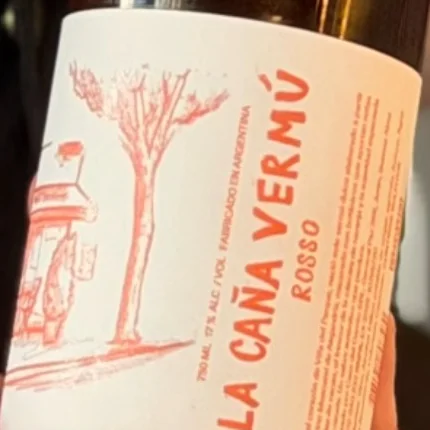

La Caña vermú Rosso Tocá para dar vuelta ↻
Rosso
Nuestro vermú de grifo, elaborado artesanalmente. El de todos los días.
- Con soda 70/30 y pomelo
- Vaso largo, botellín o botella
- Base del Americano, el Negroni y el Del Valle